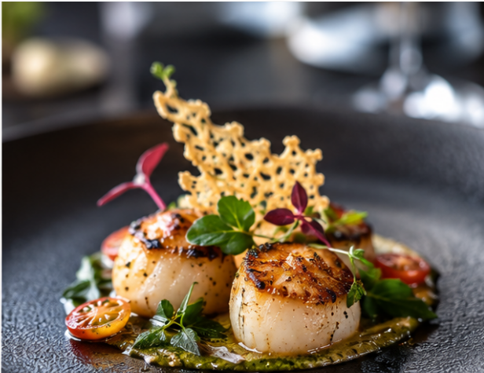
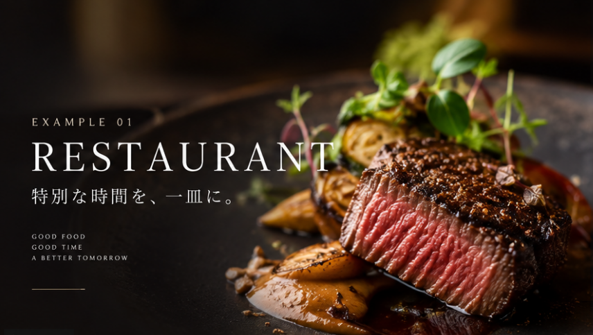
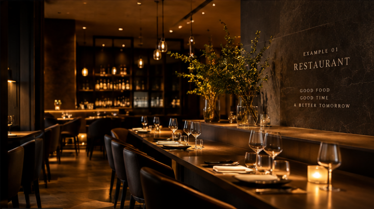

01
SIGNATURE
Food Image / Example

RESTAURANT / WEB DESIGN SAMPLE
FOOD / SPACE / EXPERIENCE
A² WEB SOLUTIONS — EXAMPLE 01
SCROLL ↓CONCEPT
写真を主役にした余白のあるレイアウトと、 落ち着いたトーンで構成した 飲食店向けWebサイトのデザインサンプルです。
店舗の世界観を直感的に伝えながら、 メニューや店舗情報など、 来店前に知りたい情報へ自然につながる構成を想定しています。

SPACE
店内の雰囲気が伝わる写真を大きく配置し、 来店前のお客様が空間をイメージできる デザインを想定しています。
INFORMATION
17:00 — 23:00
Tuesday
Sample Address / Tokyo
Online Reservation
A² WEB SOLUTIONS